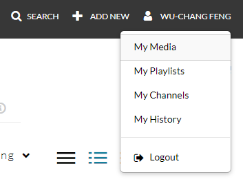
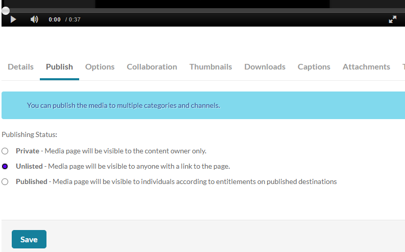

Change into your course repository
cd gensec-code
Create a .gitignore file containing the following in it.
env .venv .chromadb __pycache__ *.pyc
Within your course repository, create a directory for the homework, populate it with the files you'll be working on for this homework, then commit and push to your remote repository.
cd <path_to_repo> mkdir hw2 touch hw2/app.py touch hw2/screencast_url.txt git add hw2 git commit -m "initial commit" git push
In this homework, you will experiment with creating your own LangChain RAG application by augmenting the lab examples with your own custom functionality to build a "NotebookLM"-like service. Custom functionality can include (in increasing level of difficulty):
For this assignment you must use a coding agent from VSCode (e.g. Claude, Codex).
Your development should be organized and incremental, with frequent commits into your git repository. Code should also be properly documented via Python docstrings. In addition, you must also ensure API keys do not show up in your source files, but rather are passed in via environment variables. Ensure your application code is pushed to your repository before class.
Upon completing your application, via a narrated screencast of no longer than 5 minutes, you will perform a demonstration and source code walk-through of the application. Ensure that the video camera is turned on initially in your screencast. The screencast should follow the order given below:
You may use screencast software of your choice. Options include video conferencing applications such as Google Meet and Zoom or dedicated programs such as OBS Screen Recorder, QuickTime (MacOS), Screencast-O-Matic (Windows), or RecordMyDesktop (Linux). In addition, CaptureSpace Lite is available via PSU's Media Space (https://media.pdx.edu).
Upload your completed screencast on MediaSpace. Ensure that it is published as "Unlisted". To do so, visit MediaSpace and click on "My Media".

Click on the screencast video that has been uploaded. Then, in the tabs below, select the "Publish" tab, click on "Unlisted", and then "Save".

Then, update the file screencast_url.txt in the homework's directory to contain the URL that your unlisted screencast on MediaSpace is located. Push the changes that include the updated URL to your repository before class.
We will be using your screencast and git repository to evaluate your homework.
Code checkout shown |
Demonstration of the various capabilities and limitations of the application |
Functionality added |
Code quality (clean with no unused code or variables, readable, modular, documented with Docstrings and comments, no hard-coded keys within source code) |
Walkthrough of source code via git commits shown on Gitlab. (Quantity of submitted code explained minus the quantity of submitted code not explained) |
Instructions followed properly including code submission in the specified repository files, sequencing and length of screencast. |